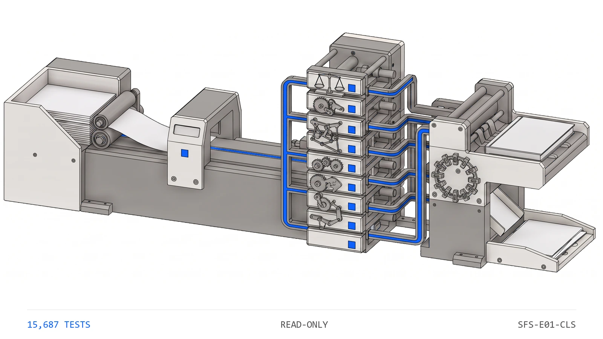

ENGINE 01
The recurring close, drafted under ten deterministic controls
Month-End Close

You provide
General ledger export
Bank statements
Last month's close package
The engine does
Drafts recurring entries, rolls schedules, ties to GL
Runs a ten-control sentinel: completeness, intercompany mirroring, shadow recompute, period lock
Refuses to post any entry that doesn't tie
You receive
Journal entries, drafted and balanced
Close checklist with tie-outs
Close package for the controller
Controls
Ten sentinel controls, fault-injection proven · out-of-tie entries cannot post
Human gate: your controller approves each entry before it posts.